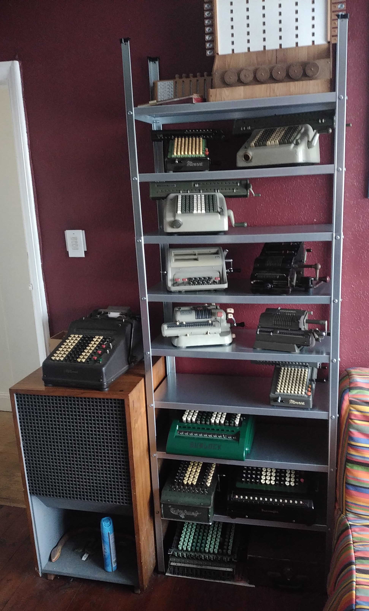

Alan's Mechanical Calculator Page
Alan's Mechanical Calculator Page
My collection of old adding machines
I have a collection of mechanical calculators that I have rescued and returned to full working order. My interest in these machines began when I happened to see a YouTube video featuring a Friden machine. After telling someone about my newfound interest I was later gifted an adding machine for my birthday, later someone else gifted me a couple more and this resulted in my acquiring more and more of them until I now have around 15 of them.These machines seem to attract little interest or value, many of them have been given to me or I have bought for under £20, I like to think I am rescuing them from being lost and some day interest in these machines may increase.
See the Schickard Calculator I made HERE
You can see more about these machines here: Jaapsch or JohnWolff or Vintage-Calculators.
lots of great YouTube content GrumpyTim or ChrisStaecker.
See a comptometer in use back in 1931 HERE
My collection:
